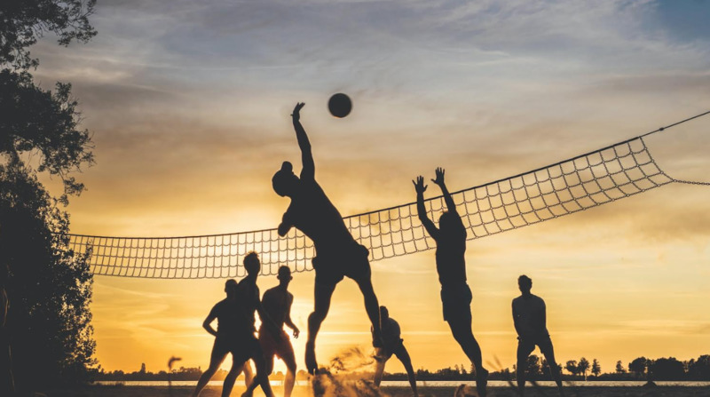
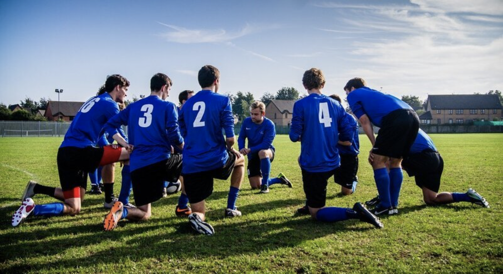

"Hold Dig Aktiv og Skab Venskaber på Samme Tid"
Fællessport og fællesskab for studerende giver ikke kun mulighed for at holde sig i form, men styrker også de sociale bånd og bidrager til en sund mental balance.
For mange studerende er det en udfordring at balancere studier, arbejde og fritid,
men ved at deltage i fællessport som fodbold, volleyball, basketball eller andre holdsportsgrene, kan man slå flere fluer med ét smæk.
Det giver ikke kun mulighed for regelmæssig motion, men også for at møde nye mennesker og opbygge stærke venskaber.

